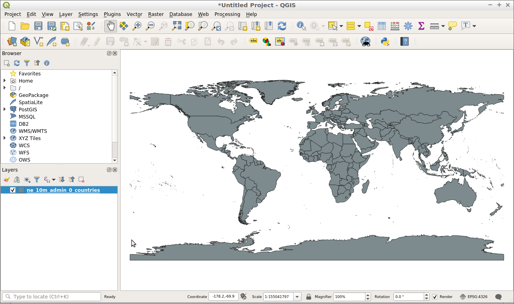
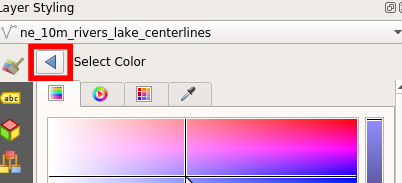

QGIS gyorstalpaló¶
A QGIS egy felhasználóbarát asztali GIS kliens, mely lehetővé teszi, hogy megjelenítsen, kezeljen, szerkesszen, elemezzen és nyomtatható térképeket állítson össze.
Contents
Start QGIS¶
- Nyissa meg «Desktop GIS» mappát.
- Duplán kattintson a «QGIS» ikonra.
You will see QGIS launch with an empty project. The various parts of the QGIS Interface are listed below.

- [1] Menu bar: Access to various QGIS features using a standard hierarchical menu.
- [2] Toolbars: For interaction with the map, layers, attributes and selections.
- [3] Browser Panel: A spatial file browser allowing drag and drop content into the map frame.
- [4] Layer Panel: Controls the map layers, their order, and visibility.
- [5] Status Bar: General information about the map and access to a universal search bar.
Create a project¶
To create a new project, choose .

Kezdjük egy vektor réteg hozzáadásával a térképhez. Rétegeket hozzáadhatunk a térképhez a képernyő bal oldalán található böngésző panel használatával.
- Menjen a képernyő bal oldalán található böngésző panelbe.
- Navigáljon a mappa fában a «home/data/natural_earth2»-höz.
- Válassza a «ne_10m_admin_0_countries.shp»-t.
- Húzza ki a réteget a böngésző panelból és dobja be a térkép keretbe.

Once the layer has been dragged onto the map frame, you will see a layer showing countries.
{kind=link}
Now let’s try adding a raster layer to the project.
- Menjen a képernyő bal oldalán található böngésző panelbe.
- Navigáljon a mappa fában a «home/data/natural_earth2»-höz.
- Válassza a «HYP_50M_SR_W.tif»-et.
- Húzza ki a réteget a böngésző panelból és dobja be a térkép keretbe.

Once the layer has been dragged onto the map frame, you will see a raster layer showing land cover and bathymetry.

Most hogy valamennyi tartalmat adtunk a projektünkhöz elmenthetjük ezt a projektet, hogy később visszatérhessünk hozzá.
Choose .

A projekt mentés helye legyen «/home/user/desktop».
Legyen a projekt neve «My QGIS project».

Click «Save».
Abból tudhatja, hogy a projektet elmentette, hogy az asztalom megjelenik a «My QGIS project» nevű projekt fájl az asztalon és a projekt már nem «untitled», hanem «My QGIS project» névvel jelenik meg.

Létező projekt megnyitása¶
Egy QGIS projekt egy későbbi felhasználáshoz megőrzi a rétegeket, a stílusokat, a térkép terjedelmét és a beállításokat. Ezen információkat a projekt fájlban tároljuk, mely «.qgs» vvagy «.qgz» kiterjesztéssel rendelkezik, a jövőben a «.qgz» lesz az alapértelmezett kiterjesztés.
Nyissunk meg egy létező QGIS projektet és nézzük meg hogyan működik ez.
- Open QGIS. Note that when QGIS is opened you will be presented with a list of recent projects to chose from. This is a convenient way to open a project you have used recently.
- Choose .
- Navigáljon a «/home/user/qgis-example» mappába.
- Válassza a «QGIS-NaturalEarth-Example.qgs» projektet.
- Click «Open».
{kind=link}
Ez egy Natural Earth adatállományokat tartalmazó QGIS projektet fog megnyitni, amint lentebb láthatja. Ez a projekt számos réteget tartalmaz a réteg panelben és a térképi tartalmaz a térkép keretben jeleníti meg.

A rétegek ki- és bekapcsolhatók, a réteg melletti jelölő négyzetbe kattintva a réteg panelben. Amikor egy réteget bekapcsol a réteg panelben, a térképet frissítjük a réteg megjelenítéséhez. A rétegpanel bezárása látható lentebb.

Dogozzunk réteg panellel és változtassuk meg néhány térképi réteg láthatóságát-
- Kattintson a jelölőnégyzetbe a «ne_10m_populated_places» réteg mellett, hogy kikapcsolja.
- Kattintson a jelölőnégyzetbe a «Water» réteg mellett, hogy kikapcsolja.
Vegye észre, hogy a térkép frissült, hogy tükrözze a módosításokat a réteg listában. Most láthatjuk az «ne_10m_populated_places» réteget mint pontok, de nem látjuk többet folyókat és tavakat, melyek a «Waters» rétegen vannak.

A réteg láthatóság vezérlése mellett a sorrendet is módosíthatjuk, melyben rétegek a réteg panelen megjelennek. Ezt megtehetjük s réteg kiválasztásával a réteg listában és fel- vagy lehúzásával a listában. A sorrend, ahogy a rétegek megjelennek a réteglistában megegyezik térképre rajzolásuk sorrendjével.
- Bal kattintás a «HYP_50M_SR_W» rétegen.
- Az egérgomb nyomvatartása mellett húzzuk a réteget a lista tetejére.
A raszter réteg most minden más réteg felett van a réteg panelben. Most a raszter réteget az összes többi réteg felett rajzolja ki a rendszer a térképen.

Próbálja a «HYP_50M_SR_W» réteget a réteglista aljár mozgatni. Ez egy megfelelőbb pozíció az ilyen rétegeknek.
Navigate the map¶
The navigation toolbar allows users to move around the map and change the map extent.

- [1] Pan: Allows the map to be dragged («panned») to a new location.
- [2] Zoom in: Allows the map extent to be zoomed in.
- [3] Zoom out: Allows the map to be zoomed out.
- [4] Zoom to full extent: Changes the map extent to fit all of the map layers into the map frame.
- [5] Zoom to layer: Changes the map extent to fit the extent of the layer highlighted in the layer panel.
Let’s try changing the map extent with the zoom-in tool.
- Válassza ki a nagyítás eszközt a navigációs eszköztárból.
- Mozgassa az egeret a térkép fölé.
- Kattintson és tartsa nyomva a bal egérgombot.
- Az egérgomb nyomvatartása mellett mozgassa átlósan a kurzort bármelyik irányban. Ez egy téglalapot rajzol, melyre nagyítani fogunk.
- Engedje el az egérgombot, ha elégedett a kialakított területtel.
Megjegyzés
A kicsinyítés eszköz esetén az eljárás ugyanaz mint a nagyítás eszköznél. Az eredmény éppen ellenkező.
Most nézzük meg a nagyítás a terjedelemre eszközt. Ez az eszköz kicsinyíti a térképet, hogy minden réteg beleférjen a térképbe. Az eszköz használatához kattintson a nagyítás a terjedelemre gombra.
Végül próbálja meg a nagyítás a rétegre eszközt. Az eszköz használatához kövesse a következő lépéseket:
- Kattintson a réteg nevére a réteg panelban.
- Kattintson a nagyítás a rétegre gombra.
A térkép a kiválasztott (aktív) réteg terjedelmére nagyít.
Style your layers¶
A QGIS-ben a stílus dokk használatával állíthatjuk be a rétegek stílusát. Alapértelmezésben a stílus dokk nem látható, de könnyen elérhető a réteg panel tetején található gombbal, amint lentebb látható.

A fenti gomb mint egy kapcsoló működik, így a stílus dokk könnyen elrejthető ugyanarra a gombra kattintva ismét. Amikor a stílus dokkot bekapcsoljuk a képernyő jobb-felső sarkában jelenik meg, készen arra, hogy az aktív réteg stílusát beállítsuk.
Nyitott stílus dokk esetén módosíthatjuk a stílus dokk tetején látható réteg megjelenését.

A most nyitott stílus dokkal módosíthatjuk a vonalak színét és vastagságát a «ne_10m_rivers_lakes_centrelines» rétegen. Először módosítsuk a színt.
Kattintson a „Color” mintára, ahogy alább látható. Ez egy színpalettát jelenít meg, mely lehetővé teszi, hogy különböző színeket válasszon.

A «Select Color» palettában mozgassa a szálkeresztet a kiválasztott színre.

Majd kattintson a balra mutató nyílra, hogy visszatérjen a szimbólum előnézethez.
A szimbólum előnézetet frissítette a program az új színnel és a réteget is a térképen.

{kind=link}
A stílus dokkban módosíthatjuk a térképi elemek méretét is. A vonalszélességek módosításához kövese a következő lépéseket:
Győződjön meg, hogy a kiválasztott az «ne_10m_rivers_lakes_centrelines» réteg, a stílus panel tetején.
A stílus panelben vigye be a «0.5» értéket a «width» mezőbe.

Figyelje meg, hogy a szimbólum előnézetben a vonalvastagság megnő és ugyanúgy a térképen is.
Kipróbálandó dolgok¶
- Bővítse a QGIS funkcionalitását modulokkal.
- Kezdje el az adatok manipulálását a Feldolgozás eszköztárral.
- Használja a QGIS-t PostGIS adatbázis tartalmának megtekintésére.
- Próbálja meg a QGIS térképét publikálni a weben, a QGIS Map Server használatával a menüből.
Mi a következő?¶
A további tanuláshoz a QGIS-ről egy jó kiinduló pont a Documentation page A QGIS honlapon és az A Gentle Introduction to GIS e-könyv.